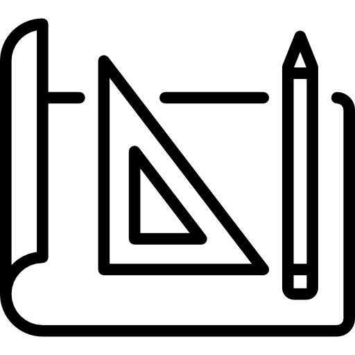

Studie
Studie dopravních řešení (technické a finanční varianty)
PROJEKČNÍ ČINNOST V DOPRAVĚ
Autorizovaný inženýr dopravních staveb
Kontaktujte NásStudie dopravních řešení (technické a finanční varianty)

Projekty pro územní a stavební řízení
Dokumentace pro realizaci dopravních staveb
Ke všem projektům nabízím i inženýrskou činnost
Výběr z realizovaných projektů
2023 - Parkoviště u panelových domů
2022 - Cyklostezka ke kapličce, Postřelmov
2022 - Autobusové zastávky, Jindřichov
2018 - Cyklostezka Zábřeh-Rovensko
2018 - Zvýšení bezpečnosti chodců u autobusových zastávek Domašov, kostel
2018 - Místní komunikace v obci Kolšov
2017 - Stezka pro chodce a cyklisty Postřelmůvek-Postřelmov
2016 - Místní komunikace
2016 - Chodník podél silnice III/3707
2016 - Účelová komunikace Postřelmov-Zábřeh
2015 - Stavební úpravy MK Luční
2015 - Revitalizace obce Rovensko
2015 - Přeložka účelové komunikace
2015 - Stavební úpravy chodníků
2015 - Chodníky v obci Kolšov
2015 - Stavební úpravy silnice v Kolšově
2014 - Naučná stezka Schroth-Priessnitz Po stopách velikánů
2014 - Místní komunikace
2014 - Parkovací stání před zubní ordinací
2013 - Úprava dopravní infrastruktury v obci Dubicko
2016 - Místní komunikace
2016 - Stezka pro cyklisty Rovensko-Zábřeh
2014 - Cyklistická stezka Postřelmov-Zábřeh
2012 - Studie průtahu obce Postřelmov (na tuto studii v roce 2013 navazuje Ing. Luděk Cekr)
2010 - Stavební úpravy křižovatky ulic Postřelmovská a ČSA
Pod Bukovou 805
Rapotín 78814
Školní 153
Bludov 78961